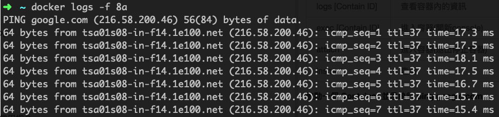
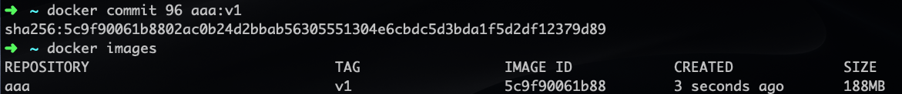

Docker & Docker Compose 安裝與配置
Docker 安裝
Ubuntu/Debian 系統安裝 Docker
# 更新系統套件
sudo apt update
# 安裝 Docker
sudo apt install docker.io
# 創建 docker 用戶組（如果不存在）
sudo groupadd docker
# 將當前用戶加入 docker 組
sudo usermod -aG docker ${USER}
# 設置 Docker socket 權限
sudo chmod 666 /var/run/docker.sock
# 重啟 Docker 服務
sudo systemctl enable docker
sudo systemctl start docker
# 需要退出重新登錄後才會生效
驗證 Docker 安裝
docker --version
docker run hello-world
Docker Compose 安裝
方法 1: 使用 apt 安裝（推薦）
# Ubuntu 20.04+ 可直接使用 apt 安裝最新版本
sudo apt update
sudo apt install docker-compose-plugin
# 驗證安裝
docker compose version
方法 2: 手動安裝最新版本
# 下載最新版本的 Docker Compose
# 請先檢查最新版本：https://github.com/docker/compose/releases/
COMPOSE_VERSION="v2.24.0"
sudo curl -L "https://github.com/docker/compose/releases/download/${COMPOSE_VERSION}/docker-compose-$(uname -s)-$(uname -m)" -o /usr/local/bin/docker-compose
# 設置可執行權限
sudo chmod +x /usr/local/bin/docker-compose
# 創建符號連結（可選）
sudo ln -s /usr/local/bin/docker-compose /usr/bin/docker-compose
# 驗證安裝
docker-compose --version
方法 3: 使用 pip 安裝
# 使用 Python pip 安裝
pip3 install docker-compose
# 或者使用虛擬環境安裝
python3 -m venv docker-env
source docker-env/bin/activate
pip install docker-compose
Docker Compose 基本使用
Docker Compose 簡介
Docker Compose 是用於定義和執行多容器 Docker 應用程式的工具。使用 YAML 檔案來配置應用程式的服務，然後使用一個命令就可以創建並啟動所有服務。
Docker Compose 基本命令
| 命令 | 說明 | 範例 |
|---|---|---|
docker compose up | 啟動所有服務 | docker compose up -d |
docker compose down | 停止並移除所有服務 | docker compose down |
docker compose ps | 查看服務狀態 | docker compose ps |
docker compose logs | 查看服務日誌 | docker compose logs -f |
docker compose build | 建置服務 | docker compose build |
docker compose restart | 重啟服務 | docker compose restart web |
docker-compose.yml 範例
基本的 Web 應用程式 + 資料庫
version: '3.8'
services:
web:
build: .
ports:
- "5000:5000"
depends_on:
- db
environment:
- DATABASE_URL=postgresql://user:pass@db:5432/mydb
volumes:
- .:/app
db:
image: postgres:15
environment:
POSTGRES_DB: mydb
POSTGRES_USER: user
POSTGRES_PASSWORD: pass
volumes:
- postgres_data:/var/lib/postgresql/data
ports:
- "5432:5432"
volumes:
postgres_data:
WordPress + MySQL 範例
version: '3.8'
services:
wordpress:
image: wordpress:latest
ports:
- "8080:80"
environment:
WORDPRESS_DB_HOST: mysql:3306
WORDPRESS_DB_USER: wordpress
WORDPRESS_DB_PASSWORD: password
WORDPRESS_DB_NAME: wordpress
volumes:
- wordpress_data:/var/www/html
depends_on:
- mysql
mysql:
image: mysql:8.0
environment:
MYSQL_DATABASE: wordpress
MYSQL_USER: wordpress
MYSQL_PASSWORD: password
MYSQL_ROOT_PASSWORD: rootpassword
volumes:
- mysql_data:/var/lib/mysql
volumes:
wordpress_data:
mysql_data:
Docker Compose 常用選項
服務配置選項
build: 建置 Docker 映像檔的路徑或配置image: 使用的 Docker 映像檔ports: 連接埠映射volumes: 資料卷掛載environment: 環境變數depends_on: 服務依賴關係networks: 網路配置restart: 重啟策略
執行選項
# 背景執行
docker compose up -d
# 重新建置並啟動
docker compose up --build
# 指定檔案
docker compose -f docker-compose.prod.yml up
# 擴展服務實例
docker compose up --scale web=3
# 停止並移除所有容器、網路
docker compose down
# 停止並移除所有容器、網路、映像檔、卷
docker compose down --rmi all --volumes
Docker 教學
docker實際上,就是一個系統聯合幾個元件一直在欺騙一個處理程序,主要依靠了三個幫凶namespace,chroot,cgroup
Containers as a Service ( CaaS ) - 容器如同服務 Docker 是一個開源專案，出現於 2013 年初，最初是 Dotcloud 公司內部的 Side-Project。 它基於 Google 公司推出的 Go 語言實作。（ Dotcloud 公司後來改名為 Docker ）
Agenda
- 基本介紹 - 映像檔、容器、倉庫
- 指令說明 - 安裝、指令
- Dockerfile 說明
- 進階應用 - docker compose
- 進階應用 - docker machine
- 實際案例
基本介紹
什麼是容器技術Container： 應用程式為中心的虛擬化
Docker 歷史
1982年Unix系統內建的chroot機制 LXC 利用controler groups 與namespaces的功能， 提供應用軟體一個獨立的作業系統環境 2013 Linux之父Linus Torvalds 發布Linux核心3.8版 支援Container技術 2013 dotCloud公司將內部專案Docker開源釋出程式碼
Containers(容器) vs Virtual Machines(虛擬主機)
Docker 三個基本概念
映像檔（Image）
- Docker 映像檔就是一個唯讀的模板。
- 映像檔可以用來建立 Docker 容器。
容器（Container）
- 容器是從映像檔建立的執行實例。
- Docker 利用容器來執行應用。
- 可以被啟動、開始、停止、刪除。
- 每個容器都是相互隔離的、保證安全的平臺。
倉庫（Repository）
- 倉庫是集中存放映像檔檔案的場所。
- 每個倉庫中又包含了多個映像檔。
- 每個映像檔有不同的標籤（tag）。
- 倉庫分為公開倉庫（Public）和私有倉庫（Private）兩種形式。
指令說明 - 安裝、指令
docker --help
安裝Docker
官方文件 Get started with Docker for Mac 官方官方 Get started with Docker for Windows Docker Toolbox overview
Image 映像檔 常用指令
| 指令 | 說明 | 範例 |
|---|---|---|
| search | 搜尋 | docker search centos |
| pull | 下載 | docker pull centos |
| images | 列表 | docker images |
| run | 執行 | docker run -ti centos /bin/bash |
| rmi [Image ID] | 刪除 | docker rmi 615cb40d5d19 |
| build | 建立 | docker build -t member:1 . |
| login | 登入 | docker login docker.okborn.com |
| push | 上傳 | docker push |
Search 搜尋 CentOS 映像檔
docker search centos
NAME：映像檔名稱 DESCRIPTION：映像檔描述 STARS：越多代表越多人使用 OFFICIAL：官方Image AUTOMATED：自動化
顯示目前本機的 Images 列表
docker images
REPOSITORY：倉庫位置和映像檔名稱 TAG：映像檔標籤(通常是定義版本號) IMAGE ID：映像檔ID(唯一碼) CREATED：創建日期 SIZE：映像檔大小
啟動容器
docker run -ti centos /bin/bash
run : 參數說明 or docker run --help 常用： -i ：則讓容器的標準輸入保持打開 -t：讓Docker分配一個虛擬終端（pseudo-tty）並綁定到容器的標準輸入上 -d：背景執行 -e：設定環境變數(AAA=BBB) -p：Port 對應(host port:container port) -v：資料對應(host folder:container folder) --name：設定容器名稱
** 在執行RUN 映像檔時，如果沒有下載會先下載在執行 **
rmi : 刪除映像檔前要先移除所有Container build : 使用build 指令時要先切換到Dockerfile 目錄下面
Container 容器 常用指令
| 指令 | 說明 | 範例 |
|---|---|---|
| run | 新建或啟動 | docker run -d centos |
| start [Contain ID] | 啟動 | docker start a469b9226fc8 |
| stop [Contain ID] | 停止 | docker stop a469b9226fc8 |
| rm [Contain ID] | 刪除 | docker rm a4 |
| ps -a | 列表 | docker ps -a |
| logs [Contain ID] | 查看容器內的資訊 | docker logs -f a4 |
| exec [Contain ID] | 進入容器(開新console) | docker exec -ti a4 /bin/bash |
| attach | 進入容器(退出停止容器) | dockr attach a4 |
| inspect | 查看 | docker inspect a4 |
啟動一個 Container 並且執行 ping google.com
docker run centos ping google.com
請動一個 Container 執行上面的動作，並背景執行
使用 查看 Container 指令
docker ps
docker ps -a
ps : 參數說明 or docker ps --help 常用： -a：顯示全部的容器
CONTAINER ID：容器ID IMAGE：映像檔名稱 COMMAND：執行指令 CREATED：創建時間 STATUS：容器狀態 POSTS：開啟的Port號 NAMES：容器名稱
顯示容器的 log
docker logs -f 8a
logs : 參數說明 or docker logs --help 常用： -f：不會跳出，會一直列印最新的log資訊 
進入容器
docker exec -ti 8a /bin/bash
exec : 參數說明 or docker exec --help 常用：
-i ：則讓容器的標準輸入保持打開
-t：讓Docker分配一個虛擬終端（pseudo-tty）並綁定到容器的標準輸入上
-e：設定環境變數(AAA=BBB)
查看容器資訊
docker inspect 8a
開啟容器到關閉容器
docker run -d ubuntu:14.04 /bin/sh -c "while true; do echo hello world; sleep 1; done"
db0e9dbb150596a3a89db056d0ecb765c54c3c2fb5d428e3b35fc20b55813862
docker logs -f db
docker ps -a
docker stop db
docker ps -a
Registry 倉庫 常用指令
| 指令 | 說明 | 範例 |
|---|---|---|
| commit | 容器存檔 | docker commit db aaa:v1 |
| pull | 下載 | docker pull docker.okborn.com/okborn:base |
| tag | 標籤 | docker tag aaa docker.okborn.com/aaa |
| push | 上傳 | docker push docker.okborn.com/member:1 |
| login | 登入 | docker login docker.okborn.com |
| export | 匯出 | docker export 7691a814370e > ubuntu.tar |
| import | 匯入 | cat ubuntu.tar sudo docker import - test/ubuntu:v1.0 |
對容器存檔
docker run -d ubuntu:14.04 /bin/sh -c "while true; do echo hello world; sleep 1; done"
96ea2a3f99e92ddd5fa0ec29f21d035703b6512f59c4f54fbaee551ee8fc044a
docker commit 96 aaa:v1

對映像檔打標籤
docker tag centos aaa asia.gcr.io/joyi-205504/aaa:v1
上傳到 GCP Registry
gcloud docker -- push asia.gcr.io/joyi-205504/aaa:v1
其他常用指令
刪除
docker rmi `docker images|grep sele |awk '{print $3}'`
Dcoker 資料管理
資料卷（Data volumes）
- 資料卷可以在容器之間共享和重用
- 對資料卷的修改會立馬生效
- 對資料卷的更新，不會影響映像檔
- 卷會一直存在，直到沒有容器使用
範例：建立一個 web 容器，並載入一個資料捲到容器的 /webapp 目錄
docker run -d -P --name web -v /webapp training/webapp python app.py
範例：本機的 /src/webapp 目錄到容器的 /opt/webapp 目錄
docker run -d -P --name web -v /src/webapp:/opt/webapp training/webapp python app.py
範例：Docker 掛載資料卷的預設權限是讀寫，使用者也可以透過 :ro 指定為唯讀
docker run -d -P --name web -v /src/webapp:/opt/webapp:ro training/webapp python app.py
資料卷容器（Data volume containers）
持續更新的資料需要在容器之間共享，最好建立資料卷容器。 一個正常的容器，專門用來提供資料卷供其它容器掛載的。
範例：建立一個命名的資料卷容器 dbdata
docker run -d -v /dbdata --name dbdata postgres echo Data-only container for postgres
範例：他容器中使用 --volumes-from 來掛載 dbdata 容器中的資料卷
docker run -d -P --volumes-from dbdata --name db1 postgres
docker run -d -P --volumes-from dbdata --name db2 postgres
範例：也可以從其他已經掛載了容器卷的容器來掛載資料卷。
docker run -d --name db3 --volumes-from db1 postgres
範例：備份
首先使用 --volumes-from 標記來建立一個載入 dbdata 容器卷的容器，並從本地主機掛載當前到容器的 /backup 目錄。
docker run --volumes-from dbdata -v $(pwd):/backup ubuntu tar cvf /backup/backup.tar /dbdata
範例：恢復
恢復資料到一個容器，首先建立一個帶有資料卷的容器 dbdata2
docker run -v /dbdata --name dbdata2 ubuntu /bin/bash
然後建立另一個容器，掛載 dbdata2 的容器，並使用 untar 解壓備份檔案到掛載的容器卷中。
docker run --volumes-from dbdata2 -v $(pwd):/backup busybox tar xvf /backup/backup.tar
Docker 中的網路功能介紹
- 要讓外部也可以存取這些應用
- 可以通過 -P 或 -p 參數來指定連接埠映射。
範例：隨機本機Port
docker run -d -P training/webapp python app.py
範例：指定本機Port
docker run -d -p 5000:5000 training/webapp python app.py
範例：綁定 localhost 的任意連接埠到容器的 5000 連接埠，本地主機會自動分配一個連接埠
docker run -d -p 127.0.0.1::5000 training/webapp python app.py
範例：還可以使用 udp 標記來指定 udp 連接埠
docker run -d -p 127.0.0.1:5000:5000/udp training/webapp python app.py
範例： -p 標記可以多次使用來綁定多個連接埠
docker run -d -p 5000:5000 -p 3000:80 training/webapp python app.py
Dockerfile 說明
- Dockerfile 由一行行命令語句組成，並且支援以 # 開頭的註解行。
- Dockerfile 分為四部分：
- 基底映像檔資訊
- 維護者資訊
- 映像檔操作指令
- 容器啟動時執行指令。
# This dockerfile uses the ubuntu image
# VERSION 2 - EDITION 1
# Author: docker_user
# Command format: Instruction [arguments / command] ..
# 基本映像檔，必須是第一個指令
FROM ubuntu
# 維護者： docker_user <docker_user at email.com> (@docker_user)
MAINTAINER docker_user docker_user@email.com
# 更新映像檔的指令
RUN echo "deb http://archive.ubuntu.com/ubuntu/ raring main universe" >> /etc/apt/sources.list
RUN apt-get update && apt-get install -y nginx
RUN echo "\ndaemon off;" >> /etc/nginx/nginx.conf
# 建立新容器時要執行的指令
CMD /usr/sbin/nginx
Dockerfile 基本語法
| 指令 | 說明 | 範例 |
|---|---|---|
| FROM : | 映像檔來源 | FROM python:3.5 |
| MAINTAINER | 維護者訊息 | MAINTAINER docker_user docker_user@email.com |
| RUN | 創建映像檔時執行動作 | RUN apt-get -y update && apt-get install -y supervisor |
| RUN ["executable", "param1", "param2"] | 創建映像檔時執行動作 | RUN ["/bin/bash", "-c", "echo hello"] |
| CMD command param1 param2 | 啟動容器時執行的命令 | CMD pserve development.ini |
| CMD ["executable","param1","param2"] | 啟動容器時執行的命令 | |
| CMD ["param1","param2"] | 啟動容器時執行的命令 | |
| EXPOSE | 容器對外的埠號 | EXPOSE 8082 |
| ADD | 複製檔案(單檔) | ADD requirements.txt /usr/src/app/ |
| COPY | 複製檔案(資料夾) | COPY . /usr/src/app |
| ENV | 環境變數 | ENV PG_VERSION 9.3.4 |
| ENTRYPOINT command param1 param2 | 指定容器啟動後執行的命令 | |
| ENTRYPOINT ["executable", "param1", "param2"] | 指定容器啟動後執行的命令 | ENTRYPOINT ["/docker-entrypoint.sh"] |
| VOLUME ["/data"] | 掛載資料卷 | VOLUME /var/lib/postgresql/data |
| USER daemon | 指定運行使用者 | RUN groupadd -r postgres && useradd -r -g postgres postgres |
| WORKDIR /path/to/workdir | 指定工作目錄 | WORKDIR /usr/src/app |
| ONBUILD [INSTRUCTION] | 基底映像檔建立時執行 | ONBUILD COPY . /usr/src/app |
RUN 當命令較長時可以使用 \ 來換行。 RUN : 在 shell 終端中運行命令，即 /bin/sh -c； RUN ["executable", "param1", "param2"] : 使用 exec 執行。
CMD 指定啟動容器時執行的命令， 每個 Dockerfile 只能有一條 CMD 命令 。 如果指定了多條命令，只有最後一條會被執行。 CMD ["executable","param1","param2"] 使用 exec 執行，推薦使用； CMD command param1 param2 在 /bin/sh 中執行，使用在給需要互動的指令； CMD ["param1","param2"] 提供給 ENTRYPOINT 的預設參數；
ENTRYPOINT：每個 Dockerfile 中只能有一個 ENTRYPOINT，當指定多個時，只有最後一個會生效。 USER：要臨時取得管理員權限可以使用 gosu，而不推薦 sudo。 WORKDIR：可以使用多個 WORKDIR 指令，後續命令如果參數是相對路徑，則會基於之前命令指定的路徑
Docker File Base
# 映像檔Image
FROM python:3.11
# 維護者（已廢棄，建議使用 LABEL）
# MAINTAINER Pellok "pellok@double-cash.com"
LABEL maintainer="pellok@double-cash.com"
# 更新
RUN apt-get -y update && apt-get install -y supervisor
# 創建專案資料夾
RUN mkdir -p /usr/src/app
# 指定工作目錄在專案資料夾
WORKDIR /usr/src/app
# 預先要安裝的requirements複製到Docker裡面
COPY requirements.txt /usr/src/app/
# 安裝需要用的插件
RUN pip install --upgrade pip setuptools
RUN pip install --no-cache-dir -r requirements.txt
# 下次Build 的時候複製專案目錄到Docker 裡面
ONBUILD COPY . /usr/src/app
建置
docker build -t sample:base .
Docker File for Project
# 挑選Image
FROM sample:base
# 安裝cryptography
RUN pip install cryptography
# 設定工作目錄
WORKDIR /usr/src/app/
# 執行Python Setup
RUN python setup.py develop
# 開啟Port號
EXPOSE 8082
# 執行專案
CMD pserve development.ini
建置
docker build -t project:v1 .
Pyramid 專案 Docker 化
#創建一個新專案
pcreate -s alchemy pyramid_dockerlize
cd pyramid_dockerlize
# 創建dockerfile
touch Dockerfile
# 編輯 Dockerfile
# 建置映像檔
docker build -t pyramid_dockerlize .
# 執行容器
docker run -d -P pyramid_dockerlize
Dockerfile
# This dockerfile uses the python pyramid
# VERSION 1 - EDITION 1
# Author: pellok
# Command describe
# 使用的python映像檔版本
FROM python:3.5
MAINTAINER pellok pellok@okborn.com
# 創建存放專案的資料夾
RUN mkdir -p /usr/src/app
# 複製當前目錄的所有檔案到容器內的，資料放在/usr/src/app
COPY . /usr/src/app
# 指定工作目錄
WORKDIR /usr/src/app/
# 安裝環境變數和相依性套件
RUN python setup.py develop
# 初始化DB
RUN initialize_pyramid_dockerlize_db development.ini
# 專案監聽的Port號
EXPOSE 6543
# 啟動專案
CMD pserve production.ini
要在 Docker 中安裝 Ubuntu 24.04 並登入 Bash，然後安裝 pip、python、vim、unzip 和 wget，你可以按照以下步驟操作：
1. 建立並啟動 Docker 容器
首先，在終端機中執行以下命令來從 Docker Hub 拉取 Ubuntu 24.04 的映像檔，並建立一個容器：
docker pull ubuntu:24.04
docker run -it --name ubuntu-container ubuntu:24.04 bash
這會將你帶入 Ubuntu 容器的 Bash 環境中。
2. 更新軟體包
在容器內，首先更新軟體包列表：
apt update
3. 安裝 Python, pip, vim, unzip, wget
接下來，安裝所需的軟體包：
apt install -y python3 python3-pip vim unzip wget
4. 驗證安裝
確認安裝是否成功：
python3 --version
pip3 --version
vim --version
unzip -v
wget --version
這些指令應該顯示安裝的版本資訊。
5. 保存和退出 Docker 容器
完成後，可以保存和退出容器：
exit
6. 再次進入容器
你可以隨時再次進入容器：
docker start ubuntu-container
docker exec -it ubuntu-container bash
這樣你就能再次進入並使用已安裝的軟體。
這個錯誤訊息是由於 Ubuntu 24.04 預設使用 "externally managed environment" 來管理 Python 軟體包，這意味著你不能直接使用 pip 在系統範圍內安裝 Python 軟體包（例如在全域範圍內）。這是因為使用 pip 安裝軟體包可能會和系統管理的 Python 軟體包產生衝突。
解決方案
你可以有以下幾個選項來解決這個問題：
1. 使用 apt 安裝 Python 軟體包
如果你需要安裝 Python 軟體包，建議使用 Ubuntu 的套件管理工具 apt：
apt install python3-pip
這樣可以避免和系統衝突，因為 apt 會使用預先打包好的軟體包版本。
2. 創建一個虛擬環境
如果你需要使用 pip 安裝一些系統沒有的 Python 軟體包，建議創建一個虛擬環境：
apt install python3-venv # 首先安裝虛擬環境模組
python3 -m venv myenv # 創建虛擬環境
source myenv/bin/activate # 啟用虛擬環境
在啟用虛擬環境後，使用 pip 安裝軟體包：
pip install <package_name>
當你不再需要虛擬環境時，可以執行 deactivate 來退出。
3. 使用 pipx 來安裝應用程式
如果你想安裝一個獨立的 Python 應用程式，可以使用 pipx 來安裝。首先安裝 pipx：
apt install pipx
pipx ensurepath
然後使用 pipx 安裝應用程式：
pipx install <application_name>
4. 使用 --break-system-packages 強制安裝（不推薦）
你也可以強制繞過這個限制，但這可能會導致系統不穩定或產生衝突，不推薦這樣做：
pip install <package_name> --break-system-packages
這種方式應謹慎使用，只適合那些了解其風險的用戶。
建議
建議使用虛擬環境 (venv) 或 pipx，這樣可以避免破壞系統環境，同時也能滿足你對 Python 軟體包的安裝需求。
參考
VM-for-Devops Virtual Box [VirtualBox5.1.8][Extension Pack] Vagrant[Vagrant1.8.7] kubernetes minikube